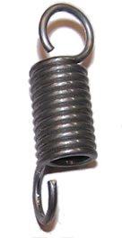

Industrial spring manufacture

An example of springs manufactured by RVF
Due to the high level of technical expertise and experience possessed by our engineering and design department engineers and technicians, several big industrial brands have entrusted the design of their springs to RVF for many years.
For example, a large part of our spring production is for companies in the following industrial sectors:
- Construction (aeration, door and window handles, etc.)
- Household appliances (vacuum cleaners, toasters, washing machines, ovens, etc.)
- Electrical equipment (circuit-breakers, energy distribution)
- Cosmetics (perfume diffusers)
- We also provide services for manufacturers of toys, pens, lighters, etc.